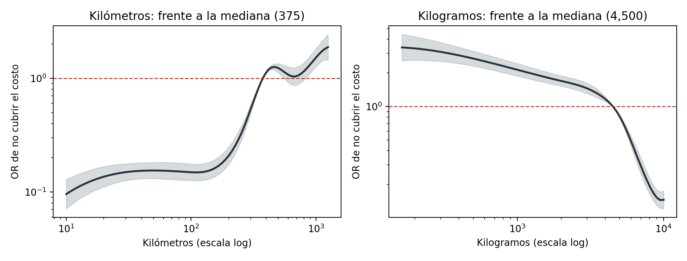
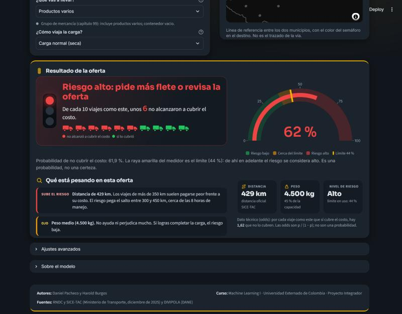
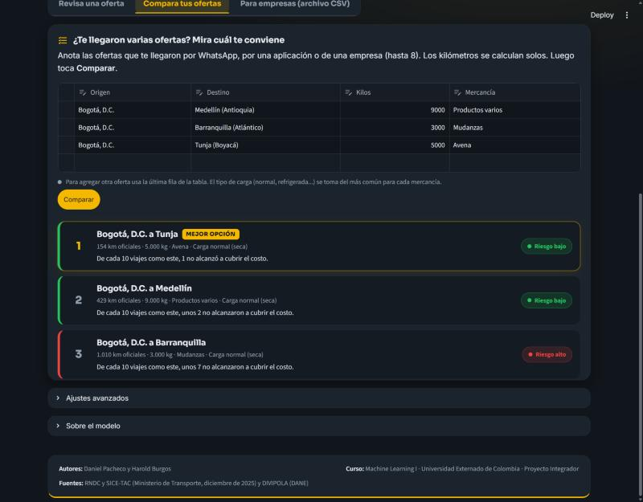

RutaRentable
Riesgo de que una oferta de carga no cubra su costo, estimado con regresión logística
Daniel Pacheco · Harold Burgos · Machine Learning I · Universidad Externado de Colombia
El problema
32,3 %
de 20.868 viajes de diciembre de 2025 no cubrió el costo de referencia del Ministerio de Transporte (SICE-TAC)
Las ofertas llegan por WhatsApp, apps o empresas, y se aceptan sin una cifra de riesgo.
Cuando el flete no alcanza, la diferencia sale de su bolsillo: combustible, peajes y su tiempo.
RNDC (lo que se pagó en cada viaje) y SICE-TAC (lo que cuesta hacerlo).
El artículo base
Momento de decisión
Valor pagado y costo de referencia SICE-TAC. Rentable = pagado ≥ costo.
Kilómetros, kilos, capítulo de mercancía, naturaleza de la carga, departamento de origen y de destino.
Con el precio ya pactado, basta comparar contra el costo SICE-TAC (así construimos la etiqueta). RutaRentable sirve antes: para decidir si negociar, cuánto pedir y qué oferta priorizar.
Datos
RNDC diciembre 2025, todos
197.548
Camión rígido de 2 ejes
87.741
Operación general, un viaje por fila
44.197
Pago, km, kilos y naturaleza válidos
37.643
Con ruta en el SICE-TAC
21.094
Conjunto final: 4.146 rutas
20.868
Costo de referencia = valor de movilización + valor hora × horas logísticas (4 h si el tránsito dura hasta 8 h; 8 h si dura más), con la mediana entre carrocerías. Rentable si lo pagado lo iguala o supera: 67,7 %.
Flujo sin fuga
Bogotá–Cali nunca está a la vez en entrenamiento y en prueba. Al azar, KNN pasaba de 0,787 a 0,796 por recordar rutas.
Medianas, escalas y categorías se calculan solo con el entrenamiento de cada uno de los 10 folds.
El Pipeline ajustado se guarda y la aplicación lo usa tal cual. Semilla 42 en todo el flujo.
Modelo final
Mismos 10 folds agrupados por ruta. Brier solo para los tres finalistas (–: no calculado).
Por qué: con logaritmo no se cumplía la linealidad del logit. Al pasar de 8 horas de tránsito la proporción de viajes rentables cae de 81 % a 62 %, justo donde las horas logísticas del costo pasan de 4 a 8. Una recta no sigue ese salto; los splines sí.
10/10
folds donde splines supera al logaritmo (+0,023 de AUC; t pareada, p = 0,0001)
Frente a KNN gana en 9 de 10 y además se puede interpretar en odds.
Umbral de decisión
Aceptar un viaje malo (falso negativo)
$348.253
faltante medio para cubrir el costo
Marcar un viaje bueno (falso positivo)
α × $468.662
margen medio en riesgo; α = 0,5 porque al marcar se contraoferta y a veces el viaje se queda
Barra amarilla: umbral con el α elegido · Marca gris: Youden (artículo).
Sensibilidad59,9 %Youden 74,3 %
Precisión63,1 %Youden 55,6 %
Ofertas marcadas30,7 %Youden 43,2 %
Costo por oferta: $49.836 con α = 0,5 (elegido) frente a $58.691 con Youden.
Si aceptar un viaje malo costara 3 veces más que perder uno bueno (α ≈ 0,25): umbral 0,375, se detecta el 68 % de los viajes malos y se marca el 37 % de las ofertas.
Los costos por oferta no son comparables entre valores de α, porque α cambia la definición del costo.
Resultado en prueba
AUC en prueba
0,784
IC 95 % por ruta: 0,766 a 0,801. Artículo: 0,81, con otra etiqueta y partición al azar.
60,6 %
de los viajes malos se detectan (818 de 1.349)
60,1 %
de las ofertas marcadas eran malas (precisión)
−48,7 %
pérdidas frente a aceptar todo (Youden: −39,2 %)
32,6 %
de las ofertas se marcan para pedir más flete
Columnas: decisión del modelo con umbral 0,44. Filas: lo que pasó en realidad.
Interpretación

IC 2,78 a 5,06 frente a carga normal
OR 0,15 a 100 km y 1,26 a 450 km, frente a 375 km
OR 2,69 con 500 kg y 0,15 con 10.000 kg, frente a 4.500 kg
Así le habla RutaRentable al transportador
6 camiones oscuros: no cubrió el costo · 4 con contorno: sí lo cubrió
La probabilidad se dice como frecuencia, con un semáforo. Las odds y el umbral quedan en “Ajustes avanzados”.
El modelo sirve antes del precio; con precio, la app compara contra el costo.
ruta-rentable.streamlit.app
Bogotá → Medellín · 429 km · 4.500 kg · productos varios
Pide más flete o revisa la oferta
Pesa: más de 350 km
De cada 10 viajes como este, unos 6 no alcanzaron a cubrir el costo.
Relleno: no cubrió el costo · Contorno: sí lo cubrió
1.010 km · 3.000 kg · mudanza
429 km · 9.000 kg · productos varios
154 km · 5.000 kg · avena


Limitaciones y proyección
Conclusiones
AUC 0,784 en 4.173 viajes de rutas nuevas.
El umbral en pesos reduce 48,7 % las pérdidas; Youden, 39,2 %.
RutaRentable lo vuelve un semáforo que cualquiera entiende.
Para negociar y priorizar, no para rechazar automáticamente.
Solo camión rígido de 2 ejes y rutas dentro del rango visto.
Piloto con transportadores registrando todas las ofertas y recalibración con meses nuevos.
Usuario secundario: la empresa transportadora (modo archivo CSV).
App: ruta-rentable.streamlit.app · Código: github.com/PachecoDa/RUTA-RENTABLE
Los botones y deslizadores de las diapositivas no cambian de diapositiva al usarlos.
Ahora
Expositor
Duración sugerida
En esta diapositiva
00:00
Total
00:00
Siguiente